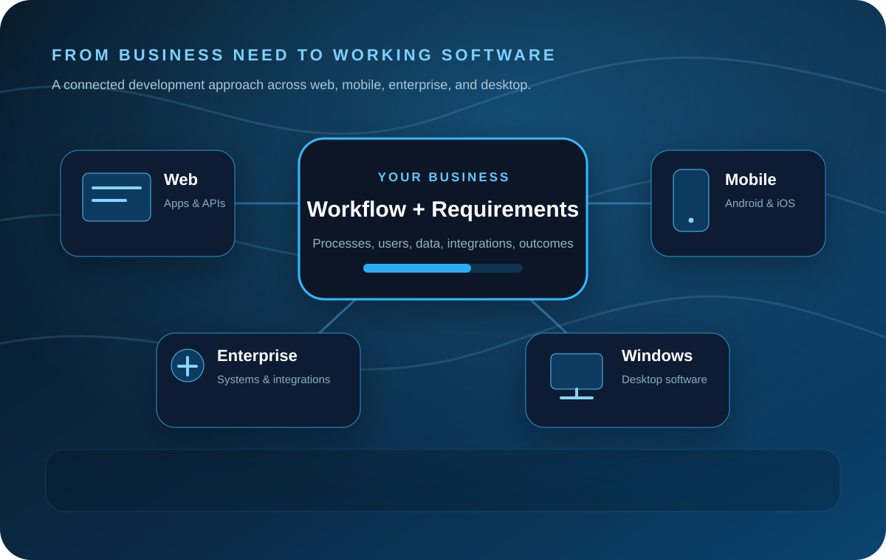

Web applications
Customer portals, internal dashboards, workflow tools, APIs, and browser-based business applications.
We build practical business software across web, enterprise, mobile, and Windows—combining product thinking, engineering, integrations, and long-term maintainability.
Serevon Labs LLC is an independent Illinois software development company founded in 2026.
We work with businesses to design and build web applications, enterprise systems and integrations, Android and iOS apps, and Windows software. The goal is straightforward: turn operational needs into reliable, maintainable software without unnecessary complexity.
We also develop and publish our own products, keeping us close to the entire software lifecycle—from product definition and user experience through engineering, deployment, support, and iteration.

We can build a focused application or a connected set of systems, depending on what the business actually needs.
Customer portals, internal dashboards, workflow tools, APIs, and browser-based business applications.
Mobile experiences for customers, field teams, internal operations, and connected-device workflows.
Business platforms, integrations, automation, and connected workflows across existing tools.
Windows applications and operational tools tailored to the environment where the work happens.
We care about the practical details that make software successful after launch: clarity, reliability, maintainability, and how naturally the product fits the people using it.
Requirements should reflect the actual workflow, not assumptions about how the business works.
The technology stack should serve the users and operating environment instead of driving the project.
Good software should be understandable enough to evolve as requirements and operations change.
Products get better when the feedback loop stays close to the people who actually depend on them.
For software project inquiries, product support, or general questions: